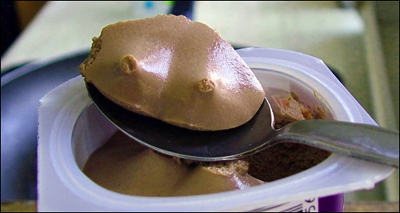

SEO-Friday: Busen Busen Busen
Wie ich vor einigen Tagen schrieb, ist meine Motivation zum Bloggen derzeit nicht voll ausgeprägt. Der Teufel weiß warum das so ist, auf jeden Fall aber kann ich meinen geschätzten Besuchern nicht in dem Maße Inhalte liefern, wie ich das gerne möchte.
Und wie das so ist, wenn einem die Inhalte ausgehen - man wendet sich dem SEO zu. Deshalb ernenne ich den Freitag zum "SEO-Friday". Das ist ein bißchen so wie ein Casual Friday, nur dass man sich, anstatt in verlodderten Klamotten rumzulaufen, ein lustiges Wort schnappt und versucht damit höher gerankt zu werden. Das bringt zwar dem regelmäßigen Leser nicht viel, aber dafür werden noch mehr Leute über Google hier reingespült, die nicht ansatzweise das finden wonach sie gesucht haben.
Garstigkeit, dein Name ist Herschel!
Nun gut, dann fangen wir mal an:
Als Suchwort habe ich mir das schöne Wort "Busen" ausgesucht, da es kurz ist, prägnant und nach der "Evangelina Anderson - Busen-Star - YiGG-Frontpage"-Gechichte schon einige Leute auf Phase 5 führt. Dies wird nun durch einen geeigneten, SEOigen Text weiter forciert.

Wie schon im genannten Artikel festgestellt, Busen, gibt es neben dem Busen-Star auch noch den Busen-Sex, den Busen-Fetischist und den Männer-Busen. Letzterer hat einen, Busen, relativ schlechten Ruf. Zurecht, wie ich finde. Obendrein gibt es noch den Hänge-Busen und den Meer-Busen. Im Endeffekt kommt es, Busen, aber auch nur darauf an, das Wort Busen häufig im Text zu platzieren. Allerdings ist ein wenig Geschick gefragt, sonst riecht Google den Braten und der gute "SEO-Friday" ist futsch.
So, auf jeden Fall habe ich das gewünschte Schlagwort anständig gestreut, ohne mich viel mit Inhalten abzugeben. Sollte mir etwas Geistreiches einfallen, was ich noch sagen möchte, dann melde ich mich die Tage wieder. Ansonsten sehen wir uns nächsten Freitag wieder, zum "SEO-Friday".
Bis dahin, Busen, euer Herschel
Bild: Chocolate Breasts von ChinchillaVilla unter CC-Lizenz
Ein Kommentar zu "SEO-Friday: Busen Busen Busen"
- Externe Links im selben Fenster öffnen
- Externe Links in neuem Fenster öffnen
Rick
Entsteht also hier eine neue Körperteileserie auf Phase 5, gewissermaßen als Rache für die toten Freitage (Bestrafung der Leser weil sie ausbleiben und damit den bemühten Autor bestrafen)?
Andererseits: vielleicht unterscheidet den Blogger vom gemeinen Zeitungsjournalisten eigentlich auch nur dass er Sache schreibt die keiner liest, allerdings ohne Bezahlung?